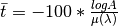
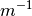
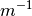

AddAbsorptionWeightedPathLengths dialog.
Table of Contents
| Name | Direction | Type | Default | Description |
|---|---|---|---|---|
| InputWorkspace | InOut | PeaksWorkspace | Mandatory | An input/output peaks workspace that the path distances will be added to. |
| EventsPerPoint | Input | number | 1000 | The number of “neutron” events to generate per peak |
| SeedValue | Input | number | 123456789 | Seed the random number generator with this value |
| MaxScatterPtAttempts | Input | number | 5000 | Maximum number of tries made to generate a scattering point within the sample. Objects with holes in them, e.g. a thin annulus can cause problems if this number is too low. If a scattering point cannot be generated by increasing this value then there is most likely a problem with the sample geometry. |
This algorithm uses the Monte Carlo simulation (originally designed for calculating absorption corrections) to calculate the absorption weighted path length for each peak in a peaks workspace. The absorption weighted path length is used to calculate extinction corrections in single crystal diffraction.
The absorption weighted path length is also referred to as “t-bar” in some literature.
The definition of the absorption weighted path length (in cm) for each peak is:

Where A is the average attenuation factor for all simulated tracks and  is the attenuation coefficient (in ) for the sample material.
is the attenuation coefficient (in ) for the sample material.
The algorithm requires an input workspace with a sample defined but no sample environment. The sample must have a material and a shape defined.
By default the beam is assumed to be the a slit with width and height matching the width and height of the sample. This can be overridden using SetBeam.
The algorithm generates some statistics on the scattering angle for the simulated tracks when the log level is set to debug.
The material for the sample defines the values of the cross section used to compute the attenuation coefficient and will include contributions from both the total scattering cross section & absorption cross section. This follows the Hamilton-Darwin [1], [2] approach as described by T. M. Sabine in the International Tables of Crystallography Vol. C [3].
The algorithm for calculating the attenuation factor A proceeds as follows. For each peak:
 . There will typically
be a single intersection and subsection but for complex sample shapes it could in theory be more is the attenuation coefficient of the sample material
. There will typically
be a single intersection and subsection but for complex sample shapes it could in theory be more is the attenuation coefficient of the sample material .
.Example: A simple cylindrical sample
# load a peaks workspace from file
peaks = LoadIsawPeaks(Filename=r'Peaks5637.integrate')
SetSample(peaks,Geometry={'Shape': 'Cylinder','Height': 5.0,'Radius': 1.0,'Center': [0.,0.,0.]},
Material={'ChemicalFormula': 'V'})
# populate the t bar column in the peaks workspace
AddAbsorptionWeightedPathLengths(peaks)
print("Tbar for first peak {:.11f} cm".format(peaks.getPeak(0).getAbsorptionWeightedPathLength()))
Output:
Tbar for first peak 1.57247690371 cm
| [1] | Darwin, C. G., Philos. Mag., 43 800 (1922) doi: 10.1080/10448639208218770 |
| [2] | Hamilton, W.C., Acta Cryst, 10, 629 (1957) doi: 10.1107/S0365110X57002212 |
| [3] | Sabine, T. M., International Tables for Crystallography, Vol. C, Page 609, Ed. Wilson, A. J. C and Prince, E. Kluwer Publishers (2004) doi: 10.1107/97809553602060000103 |
{kind=link}